El Consejo de Seguridad de la ONU abogó hoy Jueves por una " rápida y adecuada financiación " de las operaciones de mantenimiento de paz de las Naciones Unidas , ya que ésta es " crucial para el éxito " de los " cascos azules ".
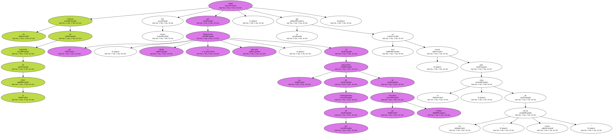Esa afirmación fue hecha por el presidente de turno del Consejo de Seguridad de la ONU , Karim Chowdhry , tras una sesión abierta celebrada hoy en Nueva York sobre el papel de los " cascos azules " en el proceso de desmovilización , desarme y reintegración de los combatientes.

El Consejo de Seguridad se complació de que en la cuestión financiera haya una implicación cada vez más activa del Banco Mundial e instó al resto de instituciones financieras internacionales a que también participen en ese asunto.
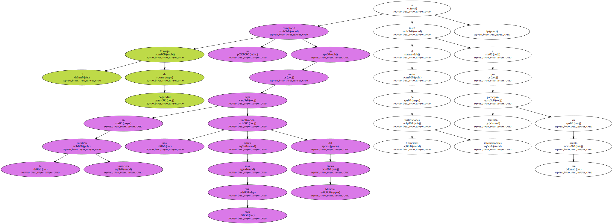La necesidad de una rápida financiación fue puesta de manifiesto asimismo por el secretario general de la ONU , Kofi Annan , en su intervención ante ese órgano.
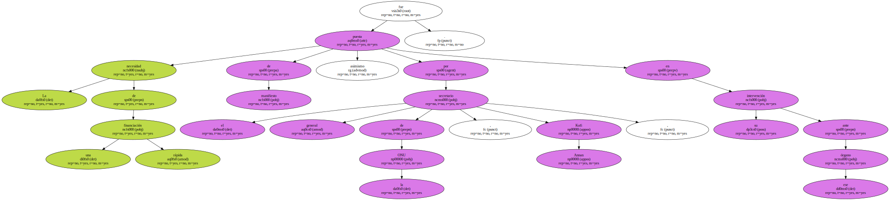Sin embargo , el Consejo de Seguridad no recogió en su declaración una solicitud de Annan en el sentido de dotar de una " gran capacidad disuasoria " a los " cascos azules ".
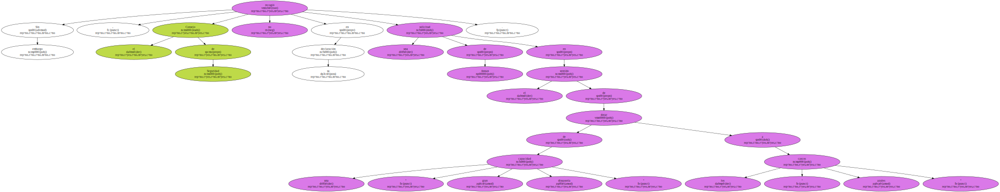Las peticiones de una rápida y adecuada financiación coinciden con la apertura hoy Jueves de la revisión de la escala de cuotas que los Estados miembros de la ONU deben aportar al presupuesto de la organización para las misiones de mantenimiento de la paz.
El embajador de Estados Unidos , Richard Hoobroke , pidió en esa Comisión una revisión de las cuotas , ya que considera que su país paga demasiado.
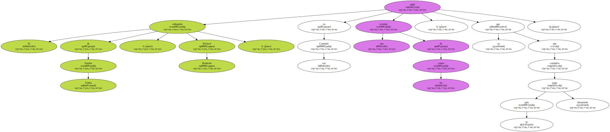Además de la cuestión financiera , el Consejo de Seguridad cree que las partes implicadas en un proceso de paz tienen expresar su compromiso político como " condición previa " al envío de " cascos azules ".
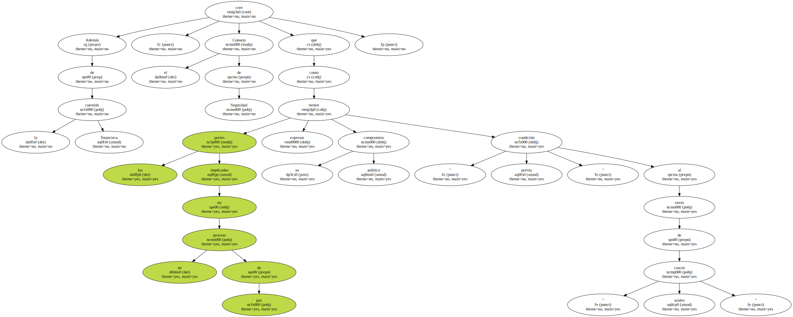" El Consejo reafirma que la desmovilización y el desarme deben tener lugar en un ambiente seguro , que dé a los ex combatientes la confianza necesaria para abandonar las armas " , agregó Chowdhry.
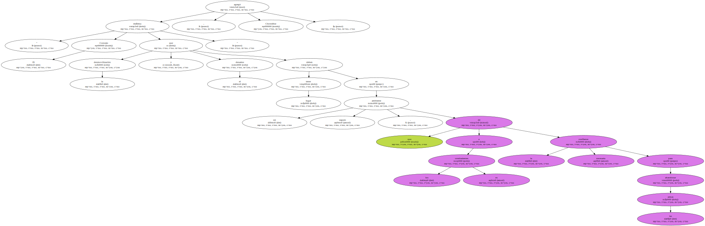La declaración presidencial destaca que " la ayuda internacional es necesaria para un desarrollo económico y social que facilite el éxito de la reintegración ".
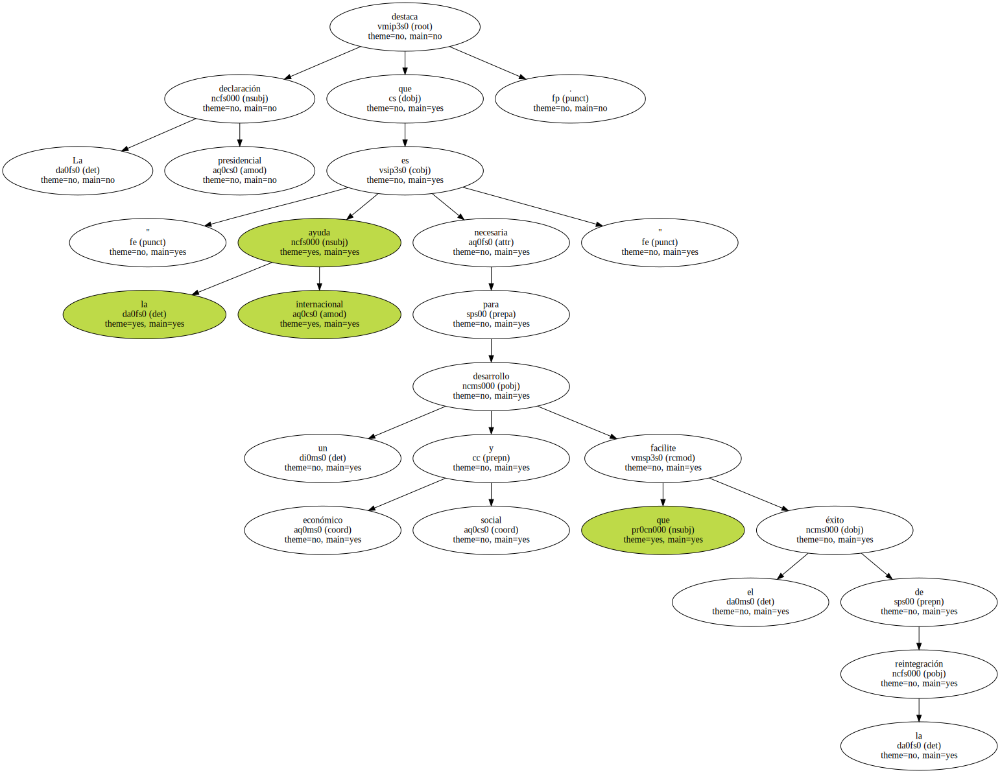El proceso de desmovilización , desarme y reintegración debe hacerse de una forma integrada para que los " cascos azules " puedan facilitar la transición del proceso de mantenimiento de la paz al de construcción de la paz.
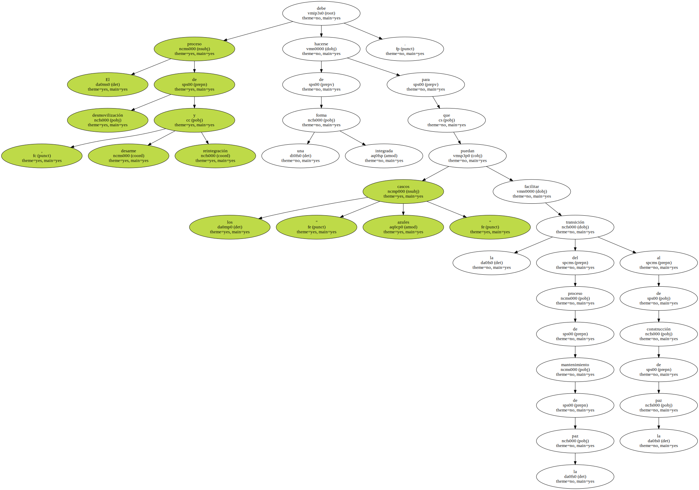Para lograr esos objetivos , los quince miembros del Consejo de Seguridad opinan que los mandatos dados a los " cascos azules " deben contener una provisión concreta sobre la desmovilización , el desarme y la reintegración.
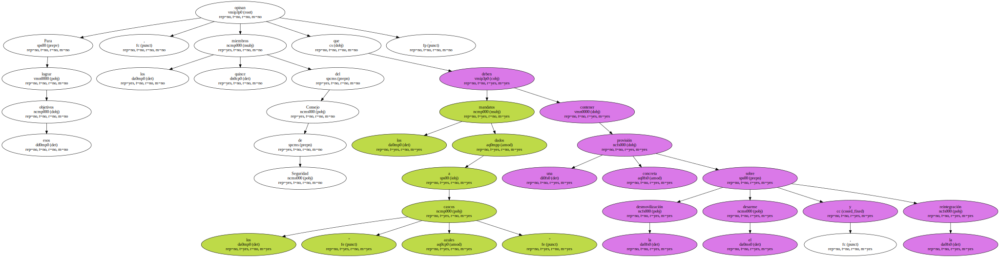En ese proceso , las agencias humanitarias de la ONU también deben tener un mandato del Consejo de Seguridad al respecto , especialmente en lo que se refiere a la desmovilización y reintegración de los niños soldados , meta en la que el Fondo de Naciones Unidas para la Infancia ( UNICEF ) debe representar un papel destacado.

Una de las claves del éxito para las operaciones de mantenimiento de la paz es , a juicio del máximo órgano de decisión detener el tráfico ilegal de armas ligeras en las zonas en conflicto.
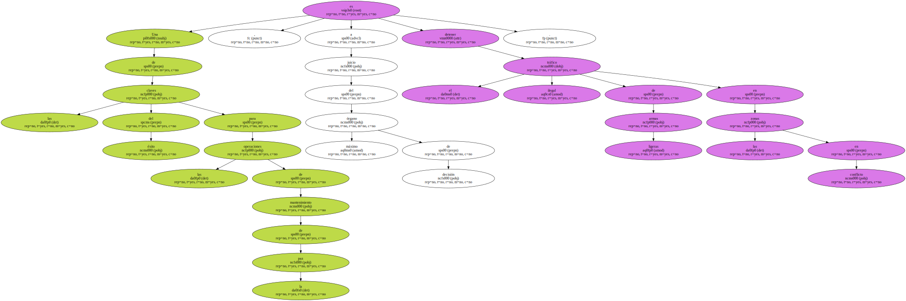